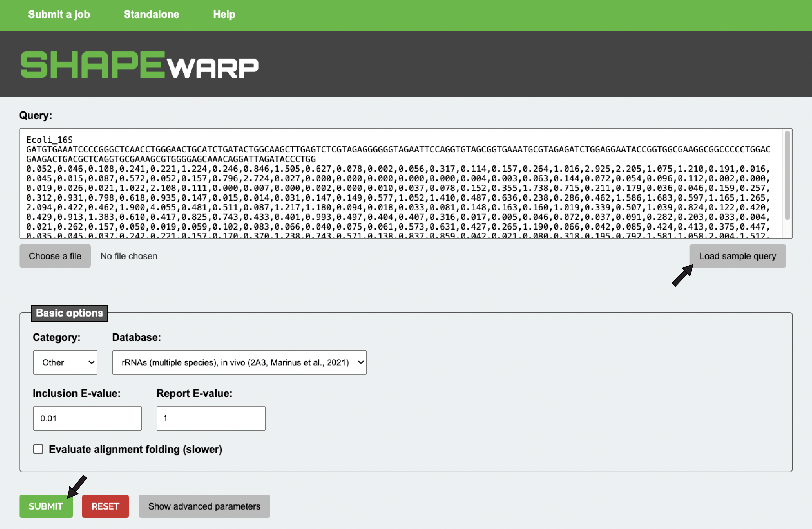
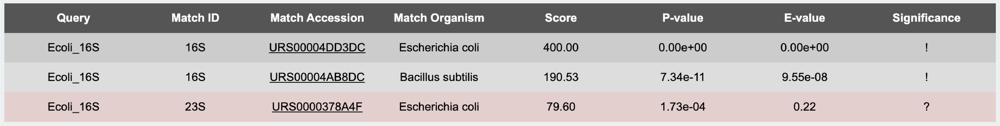
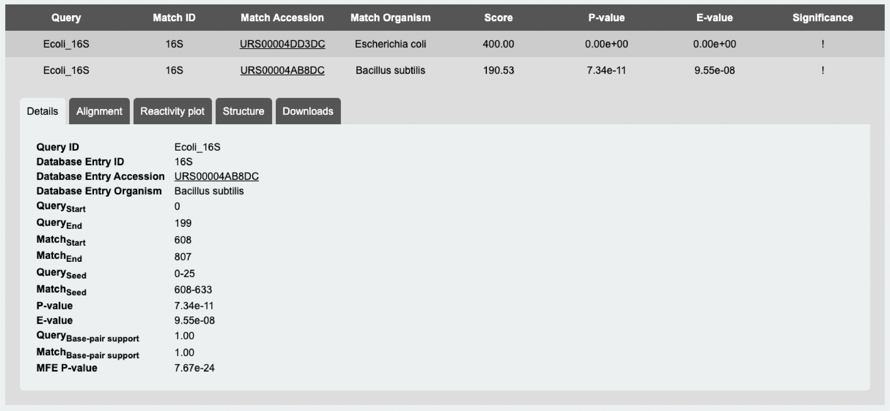

What is SHAPEwarp?
SHAPEwarp is a sequence-agnostic method for the identification of structurally-similar
RNA elements in a database of SHAPE (Selective 2′-hydroxyl acylation analyzed by primer extension) chemical
probing-derived reactivity profiles.
The approach used by SHAPEwarp is inspired by the BLAST
algorithm and builds on top of two widely used methods for similarity search in time series data: Mueen's
Algorithm for Similarity Search (MASS)
and dynamic time warping (DTW).
Briefly, SHAPEwarp identifies ungapped groups of short segments (High Scoring Groups, or HSGs)
showing highly similar reactivity profiles between a query and a target RNA. Each HSG serves as a seed from
which the alignment is bidirectionally extended using a banded semi-global alignment algorithm that incorporates
both features of the Gotoh’s Smith-Waterman algorithm with affine gap penalties and of DTW.
By default, the alignment solely relies on the reactivity profiles, although sequence can be optionally considered
(see below Search parameters and
Understanding search parameters).
For a complete description of the algorithm, please refer to the original publication:
Edoardo Morandi, Martijn J. van Hemert & Danny Incarnato (2022) SHAPE-guided RNA structure homology search and motif discovery (Nat. Commun.)
How does SHAPEwarp work?
SHAPEwarp takes a user-provided query, consisting of an RNA sequence and a corresponding set of SHAPE reactivities,
and searches it against a database of SHAPE reactivity profiles.
A query is composed of 3 lines, respectively containing:
- Unique query ID
- Sequence
- Comma-separated list of SHAPE reactivities
Below you can see an example:
Ecoli_16S GATGTGAAATCCCCGGGCTCAACCTGGGAACTGCATCTGATACTGGCAAGCTTGAGTCTCGTAGAGGGGGGTAGAATTCCAGGTGTAGCGGTGAAATGCGTAGAGATCTGGAGGAATACCGGTGGCGAAGGCGGCCCCCTGGACGAAGACTGACGCTCAGGTGCGAAAGCGTGGGGAGCAAACAGGATTAGATACCCTGG 0.052,0.046,0.108,0.241,0.221,1.224,0.246,0.846,1.505,0.627,0.078,0.002,0.056,0.317,0.114,0.157,0.264,1.016,2.925,2.205,1.075,1.210,0.191,0.016,0.045,0.015,0.087,0.572,0.052,0.157,0.796,2.724,0.027,0.000,0.000,0.000,0.000,0.000,0.004,0.003,0.063,0.144,0.072,0.054,0.096,0.112,0.002,0.000,0.019,0.026,0.021,1.022,2.108,0.111,0.000,0.007,0.000,0.002,0.000,0.010,0.037,0.078,0.152,0.355,1.738,0.715,0.211,0.179,0.036,0.046,0.159,0.257,0.312,0.931,0.798,0.618,0.935,0.147,0.015,0.014,0.031,0.147,0.149,0.577,1.052,1.410,0.487,0.636,0.238,0.286,0.462,1.586,1.683,0.597,1.165,1.265,2.094,0.422,0.462,1.900,4.055,0.481,0.511,0.087,1.217,1.180,0.094,0.018,0.033,0.081,0.148,0.163,0.160,1.019,0.339,0.507,1.039,0.824,0.122,0.420,0.429,0.913,1.383,0.610,0.417,0.825,0.743,0.433,0.401,0.993,0.497,0.404,0.407,0.316,0.017,0.005,0.046,0.072,0.037,0.091,0.282,0.203,0.033,0.004,0.021,0.262,0.157,0.050,0.019,0.059,0.102,0.083,0.066,0.040,0.075,0.061,0.573,0.631,0.427,0.265,1.190,0.066,0.042,0.085,0.424,0.413,0.375,0.447,0.035,0.045,0.037,0.242,0.221,0.157,0.170,0.370,1.238,0.743,0.571,0.138,0.837,0.859,0.042,0.021,0.080,0.318,0.195,0.792,1.581,1.058,2.004,1.512,2.273,1.256,0.036,0.005,0.094,0.091,0.464,0.741
Multiple queries can be simultaneously searched against a database.
The webserver has the following limits:
- Each individual query cannot exceed 300 nucelotides
- The sum of all queries cannot exceed 3,000 nucleotides
To perform a test run, just click on "Submit a job" in the top menu, then click on
"Load sample query", then click "Submit" (see below):

Search parameters
Below is a complete list and description of SHAPEwarp's parameters. To better understand how each parameter is used, check the next section Understanding search parameters.
-
Basic options
- Inclusion E-value. Matches having E-value < this threshold are considered to be significant
- Report E-value. Matches having E-value ≥ Inclusion E-value and < this threshold are reported, but no details (such as sequence/reactivity alignments, nor consensus structure) are reported
- Evaluate alignment folding. When this option is enabled, matches having E-value < Inclusion E-value are analyzed using RNAalifold to derive a consensus structure for the match alignment (Note: this operation can increase the computation time)
- General
- Max reactivity. Maximum value to which reactivities will be capped
- Max alignment overlap. If two significant alignments overlap by more than this value, the least significant one (the one with the lowest alignment score) will be discarded
- Null HSGs. Maximum number of HSGs in the shuffled database to be extended to build the null model
- Kmer lookup
- Min kmers. Minimum number of kmers required to form a High Scoring Group
- Max kmer distance. Maximum distance between two kmers to be merged in a HSG
- Kmer length. Length (in nt) of the kmers
- Kmer offset. Sliding offset (in nt) for extracting candidate kmers from the query
- Min kmer complexity. Minimum complexity (measured as Gini coefficient) of candidate kmers
- Kmer max match every nt. A kmer is allowed to match a database entry on average every this many nt
- Match kmer GC content. The sequence of a query kmer and the corresponding database match must have GC% contents differing no more than Kmer max GC difference
- Kmer max GC difference. Maximum allowed GC% difference to retain a kmer match
- Match kmer sequence. The sequence of a query kmer and the corresponding database match must differ no more than Kmer max sequence distance
- Kmer max sequence distance. Maximum allowed sequence distance to retain a kmer match. When ≥ 1, this is interpreted as the absolute number of bases that are allowed to differ between the kmer and the matching region. When < 1, this is interpreted as a fraction of the kmer's length
- Alignment
- Match score. Minimum and maximum score reactivity differences below 0.5 will be mapped to
- Mismatch score. Minimum and maximum score reactivity differences above 0.5 will be mapped to
- Gap open penalty. Penalty for opening a gap
- Gap extension penalty. Penalty for extending a gap
- Max drop-off rate. An alignment is allowed to drop by maximum this fraction of the best score encountered so far, before extension is interrupted
- Max drop-off bases. An alignment is allowed to drop below the best score encountered so far × Max drop-off rate by this number of bases, before extension is interrupted
- Length difference tolerance. The maximum allowed tollerated length difference between the query and db sequences to look for the ideal alignment along the diagonal (measured as a fraction of the length of the shortest sequence between the db and the query)
- Score sequence. Sequence will be also considered during the alignment
- Sequence match score. Score reward for matching bases
- Sequence mismatch score. Score penalty for mismatching bases
- Folding evaluation
- Shufflings. Number of shufflings to perform for each alignment
- Block size. Size (in nt) of the blocks for shuffling the alignment
- In-block shuffle. Besides shuffling blocks, residues within each block will be shuffled as well
- Min base-pair support. Minimum fraction of base-pairs of the RNAalifold-inferred structure that should be supported by both query and matched database sequence to retain a match
- Max base-pair span. Maximum allowed base-pairing distance in the consensus structure
- Slope. Slope for SHAPE reactivities conversion into pseudo-free energy contributions
- Intercept. Intercept for SHAPE reactivities conversion into pseudo-free energy contributions
- No lonely pairs. Disallows lonely pairs (helices of 1 bp) in the consensus structure
- No closing GU. Dissalows G:U wobbles at the end of helices in the consensus structure
- RIBOSUM scoring. Use RIBOSUM scoring matrix (please refer to the RNAalifold manual for details)
Advanced options
Understanding search parameters
While it is advisable for most users to run SHAPEwarp with its default parameters, as these are the results of a careful
and thorough calibration, it might be useful to adjust the analysis on a case-by-case basis.
First of all, as SHAPE reactivities can have a variable range, depending on the adopted normalization scheme,
both query and database reactivities are capped to a maximum value of Max reactivity.
During the kmer lookup phase, the algorithm enumerates all the possible kmers of size Kmer length in the user-provided query, filtering out those:
1. encompassing NaN values
2. having Gini coefficient < Min kmer complexity, corresponding to regions of low structural complexity (expected to match most transcripts)
Kmers are matched against the database using the MASS algorithm. Given a kmer and a database reactivity profile,
MASS returns an array of distances of that kmer to each position of the database profile. Matches having a distance < μ - 3 × σ, where μ and σ are respectively
the mean and the standard deviation of the distances, are retained. Kmer-match pairs are then filtered out on the basis of the following criteria:
1. when Match kmer GC content is enabled and the difference between the GC% content of the kmer and that of its database match is > Kmer max GC difference
2. when Match kmer sequence is enabled and the sequence of the kmer and that of its database match differ by more than Kmer max sequence distance
3. when the ratio between the length of the database transcript and the number of matches for a given kmer in that transcript is < Kmer max match every nt
The retained kmers are then grouped into high-scoring groups (HSGs). HSGs are made of kmers residing on the same diagonal (so, corresponding to regions of the query and database that can be theoretically aligned
without opening gaps). Each HSG is made of ≥ Min kmers, residing within a maximum distance of Max kmer distance from each other.
Each HSG constitutes the seed from which an alignment extension will be attempted, both upstream and downstream. The seed extension uses a dynamic programming algorithm that incorporates features
of both dynamic time warping (DTW) and of Gotoh's Smith-Waterman implementation with affine gap penalties. In brief, if the reactivity difference between two bases is < 0.5, the corresponding alignment score
is calculated by linearly mapping the reactivity difference to the Match score range. Similarly, if the reactivity difference is ≥ 0.5, the corresponding alignment score is calculated by
linearly mapping the reactivity difference to the Mismatch score range. Affine gap penalties are controlled via the Gap open penalty, the gap open penalty, and Gap extension penalty,
the gap extension penalty. During the matrix-filling stage of the algorithm, the alignment score is allowed to drop by not more than Max drop-off rate × the best alignment score encountered so far,
for no more than Max drop-off bases. While the algorithm is sequence-agnostic by default, sequence can be optionally taken into account by enabling the Score sequence option.
When enabled, sequence matches are rewarded by Sequence match score and mismatches are penalized by Sequence mismatch score. To further speed-up the alignment phase,
the alignment matrix is only filled in a band of size b around the diagonal, where b is defined as min(10, Length difference tolerance × min(q, d)), where q and
d are respectively the length of the query and of the database entry. Therefore, a minimum band size of 10 nt is always granted. The final alignment score S is calculated as the sum of the scores of the HSG
(the seed), plus the two upstream and downstream extensions.
After having extended any possible HSG in the database, the same procedure is repeated by searching the query in a database of shuffled reactivity profiles. A maximum of Null HSGs HSGs identified in the shuffled
database are extended, and the resulting alignment scores are used to build the null model, hence allowing to calculate a p-value for each alignment from the real database. The p-value> is the probability of
identifying by chance a match having a score ≥ S. The E-value corresponds to the number of expected database matches having a score ≥ S and it is thus calculated as p-value × the number of extended HSGs.
It might happen, especially with long queries, that multiple HSGs will be identified for the same query-database entry pair, hence resulting in multiple overlapping alignments. To prevent duplicate matches from being reported,
if multiple alignments overlap by more than Max alignment overlap, only the one with the lowest E-value is reported.
Optionally, if the Evaluate alignment folding option is enabled, alignments passing the Inclusion E-value cutoff can be evaluated for the presence of a consensus secondary structure, via RNAalifold.
RNAalifold uses both the sequence alignment and the corresponding SHAPE reactivity information. SHAPE reactivities are converted into pseudo free energy contributions by using the approach from Deigan *et al.*, 2009, where:
ΔGSHAPE(i) = Slope · ln[Reactivity(i) + 1] + Intercept
Pre-defined Slope/Intercept value pairs are available for standard SHAPE reagents.
If < than Min base-pair support base-pairs from the predicted consensus structure are supported for either of the two aligned RNAs, the match is discarded. Furthermore, the probability of predicting a structure with a free
energy ≤ to that of the consensus structure inferred from the alignment is evaluated by randomly shuffling Shufflings times the columns of the original alignment in Block size-long blocks, followed by RNAalifold analysis.
A z-score is calculated and the corresponding p-value determined. If the p-value is < 0.05, the alignment and the inferred structure are reported.
SHAPEwarp results
SHAPEwarp will return a table containing the list of all the significant matches (so, the matches within the user-defined inclusion E-value threshold). These results will be marked by a "!" under the "Significance" column. If a report E-value higher than the inclusion E-value was specified, matches above the inclusion E-value threshold, but below the report E-value threshold, will also be reported, marked by a "?" and colored in red.
A sample SHAPEwarp output is depicted in picture below:

By clicking on each result, a detailed overview of the specific match will be shown:

Four (or five, depending on whether the "Evaluate alignment folding" option was enabled) tabs will be available:
- Details. A detailed summary of the specific match
- Alignment. The sequence alignment between the query and the database match
- Reactivity plot. Plot depicting the aligned SHAPE reactivity profiles between the query and the database match
- Structure. Plot of the consensus structure as derived by RNAalifold, colored either by the query or database match SHAPE reactivities (Note: structure plot generation requires the "Evaluate alignment folding" option to be enabed)
- Downloads. Links to download the aligned sequences and reactivity profiles (as well as the structure plots, when present) for the query and the database match
Available databases
SHAPEwarp provides a number of high-quality SHAPE reactivity databases. Additional databases will be added over time. If you want to request the addition of a specific database, please contact us.
- Mammals
-
Sun et al., 2021. Predicting dynamic cellular protein-RNA interactions by deep learning using in vivo RNA structures. (Cell Res.)
RNA class: PolyA+
Reagent: NAI-N3
Library strategy: icSHAPE
Condition: in vivo
Dataset(s): Homo sapiens (HEK293, HeLa, HepG2, H9 hESC, K562); Mus musculus (mES) -
Monroy-Eklund et al., 2023. Structural analysis of MALAT1 long noncoding RNA in cells and in evolution. (RNA)
RNA class: MALAT1 lncRNA
Reagent: 5NIA
Library strategy: SHAPE-MaP
Condition: in vivo & ex vivo
Dataset(s): Homo sapiens (A549, HEK293); Chlorocebus sabeus (VERO) - Bacteria
-
Mustoe et al., 2018. Pervasive Regulatory Functions of mRNA Structure Revealed by High-Resolution SHAPE Probing. (Cell)
RNA class: mRNA
Reagent: 1M7
Library strategy: SHAPE-MaP
Condition: in vivo
Dataset(s): Escherichia coli - Viruses
-
Li et al., 2018. Integrative Analysis of Zika Virus Genome RNA Structure Reveals Critical Determinants of Viral Infectivity. (Cell Host Microbe.)
RNA class: gRNA
Reagent: NAI-N3
Library strategy: icSHAPE
Condition: in vivo
Dataset(s): Zika virus (Asian and African strains) -
Manfredonia et al., 2020. Genome-wide mapping of SARS-CoV-2 RNA structures identifies therapeutically-relevant elements. (Nucleic Acids Res.)
RNA class: gRNA
Reagent: NAI
Library strategy: SHAPE-MaP
Condition: in vivo & in vitro
Dataset(s): SARS-CoV-2 -
Morandi et al., 2022. SHAPE-guided RNA structure homology search and motif discovery. (Nat. Commun.)
RNA class: gRNA
Reagent: 2A3
Library strategy: SHAPE-MaP
Condition: in vitro
Dataset(s): SARS-CoV; SARS-CoV-2 -
Yang et al., 2024. Mapping of the influenza A virus genome RNA structure and interactions reveals essential elements of viral replication. (Cell Rep.)
RNA class: gRNA
Reagent: NAI-N3
Library strategy: icSHAPE
Condition: in vivo & in virio
Dataset(s): Influenza A virus - Other
-
Marinus et al., 2021. A novel SHAPE reagent enables the analysis of RNA structure in living cells with unprecedented accuracy. (Nucleic Acids Res.)
RNA class: rRNA
Reagent: 2A3
Library strategy: SHAPE-MaP
Condition: in vivo
Dataset(s): Escherichia coli; Bacillus subtilis; Saccharomyces cerevisiae; Homo sapiens (HEK293)